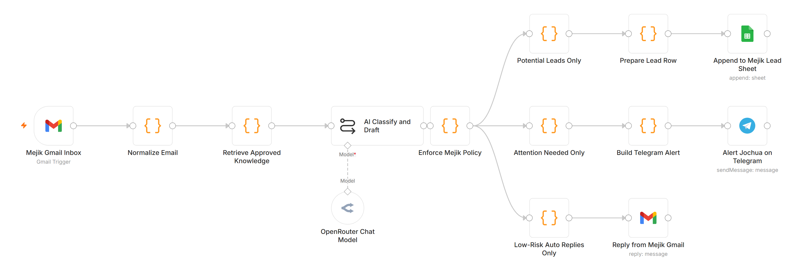
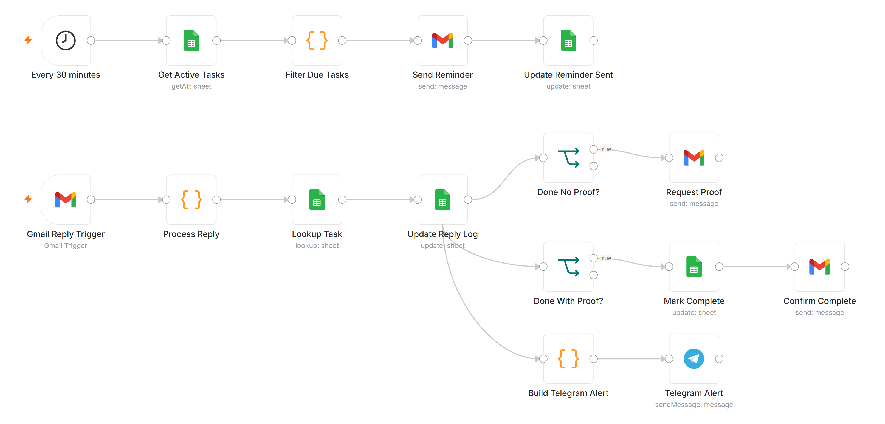
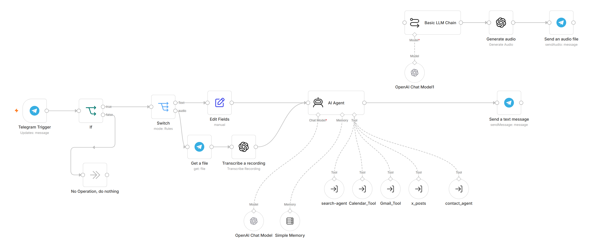
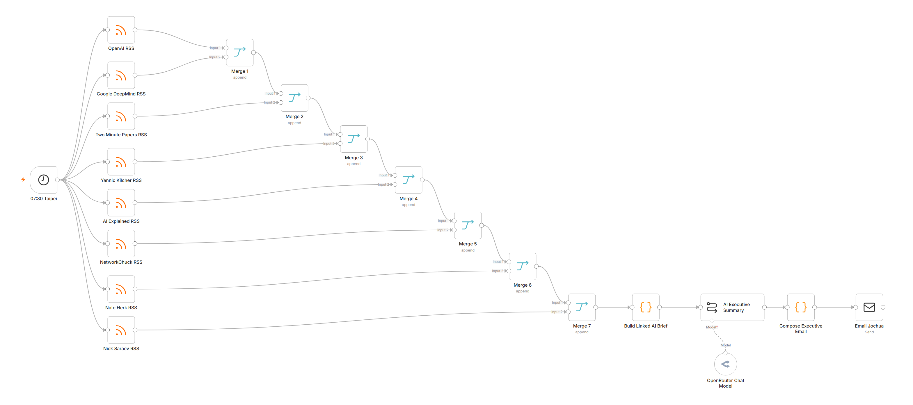

AI Email Agent
Reads every incoming email, classifies it with AI, logs leads, alerts on anything urgent, auto-replies only to routine questions.

Task Reminders & Reply Handler
Sends due-task reminders, matches replies to the right task, asks for missing proof, marks work complete.

Multi-Agent AI Assistant
One assistant, by text or voice, that delegates to specialist agents for calendar, email, contacts and web search.

Daily AI Briefing
Every morning at 07:30: collects eight sources, merges them and emails an AI-written executive summary.
